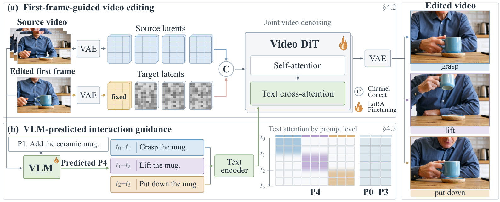

Make inserted objects “alive”: not merely visible, but part of the video’s world, responding to surrounding actions.
Evaluation visualizations
We will release 3D-rendered samples once permission is granted.
Dataset
Training examples
Total 35,800 editing pairs.
Prompt levels
Annotations of the same video pair.
Method
Inputs: source video, edited first frame, P1-level prompt.
The diffusion editor combines source and noisy target latents via channel concatenation, keeps the edited first-frame latent clean, and uses text cross-attention for prompt guidance.
To help infer interactions, a VLM predicts P4-level prompts from the same inputs to guide the diffusion editor.

Full comparison
We will release 3D-rendered samples once permission is granted.
Results
The Overall, Task, and Motion scores in the table are assigned by GPT-5.6 Sol (high reasoning effort).
Limitations
The source video and edited first frame may not fully determine complex object responses, so ALIVE aims for plausible interactions consistent with source actions. Complex deformations and rapid, large-angle rotations remain challenging, and incorrect VLM guidance can cause editing errors. The current editor uses bidirectional video context and does not support streaming generation.